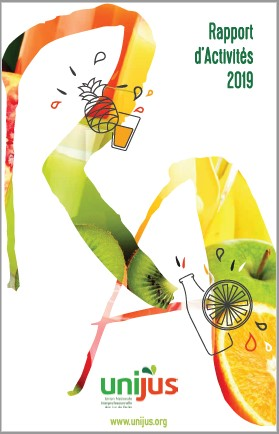

- édito 2019 -
EMMANUEL VASSENEIX
PRÉSIDENT D’UNIJUS ET PDG DE LA LAITERIE DE SAINT-DENIS-DE-L’HÔTEL
Chers Adhérents,chers Amis,
Si je regarde dans le rétroviseur, je retiens pour ma part que l’année 2019 a été une année où nous avons beaucoup parlé d’emballages dans nos organisations collectives ! Un vrai tournant ! Tant sur le fond que sur la forme, nos organisations, y compris UNIJUS, ont dû se réorganiser et monter en expertise.
Sur ces sujets, qui ne sont pas nouveaux mais qui ne faisaient jusque-là l’objet de débats qu’entre spécialistes, tout le monde a désormais un avis !
Je suis et reste un Homme du collectif et du collaboratif, comme vous le savez. Mais peut-on encore parler d’échanges et d’écoutes quand, sur des sujets aussi complexes que structurants, des décisions politiques sont parfois prises dans une certaine précipitation, avec beaucoup de certitudes sans vraiment peser les enjeux et le véritable intérêt collectif ?
En une année, nous avons eu au niveau européen la publication de la directive Single Use Plastique et au niveau français la loi AGEC avec notamment une stratégie plastique 2040 à forte ambition de réduction, réemploi et recyclage du plastique. Un programme qu’il va falloir digérer et qui nous occupera pendant plusieurs années ! Je me bats dans le cadre d’une sécurité alimentaire accrue et non négociable sur la nécessité de supprimer ce qui ne sert à rien, sur l’intérêt de réduire au maximum les impacts et la nécessité de recycler ce qui doit l’être. Mais tout cela doit aussi tenir compte de nos contraintes industrielles et financières et s’assurer que tout cela profite à notre pays. Il faut recréer de la valeur en produit, en emballages, en ingénierie et pouvoir valoriser tout cela.
2019 a également été riche sur les annonces en nutrition avec la présentation du 4ème PNNS et du 3ème PNA en septembre. Des annonces qui vont constituer le cadre des politiques de santé publique des années à venir. Pour avoir un message simple à passer aux consommateurs, les autorités publiques de santé ont fait le choix de classer nos jus de fruits et nectars uniquement dans la catégorie des boissons sucrées. Il sera nécessaire d’accompagner ces annonces par des informations positives pour rappeler tous les atouts de nos jus et nectars tant sur le plan nutritionnel que du plaisir !
2019 aura été aussi l’année de la montée en notoriété du Nutri-Score ! Un outil dont nous suivons la progression depuis plusieurs années et qui apparaît désormais dans les débats au niveau européen. C’est un outil appelé à évoluer. UNIJUS sera actif pour participer au débat.
Sur tous ces sujets, UNIJUS nous accompagne en nous aidant à nous approprier les contextes, à en comprendre l’impact sur nos produits et à définir des positions pour nos secteurs. Ce travail, riche en échanges, est très précieux. 2019 a été également une année de départ de plusieurs personnes piliers de notre organisation. Côté UNIJUS, Diane Durand-Reville et Marine Desorges nous ont quitté début 2019 quand côté industriel, c’étaient Emmanuel Manichon, Bruno Thévenin, Martine Kocken et Christine Guittard. Toutes ces personnes ont beaucoup apporté à nos structures pendant de longues années. Qu’elles en soient toutes remerciées. La relève est désormais en place et elle n’a pas du tout à rougir ! Le réseau est désormais reconstitué et la machine repartie ! Je félicite tous les nouveaux !
Au moment où je vous écris, nous sommes en pleine crise du Covid 19. Nous aurons l’occasion de développer le sujet dans le rapport de l’année prochaine. Nous aurons ainsi le recul pour en tirer le bilan. Mais je sais déjà qu’il sera lourd… Ce que je peux déjà partager avec vous tous, c’est ce que cette crise dit de nos organisations professionnelles. Ces organisations et leurs permanents font partie de ces travailleurs de l’ombre qui constituent la seconde ligne. Sans relâche, elles accompagnent au mieux nos filières. L’ANIA pour l’ensemble de l’agro-alimentaire et Unijus pour le secteur des jus de fruits jouent pleinement leur rôle : information en continu des adhérents, interlocuteur au quotidien du gouvernement, prospective, solidarité. Voilà les mots qui sont au centre des préoccupations depuis le début de la crise. Et qui continueront de l’être : car le chemin de la reprise et de la croissance sera
long.
Pour finir je voudrais adresser un grand merci aux Femmes et aux Hommes de nos entreprises, d’Unijus et de Qualijus qui s’engagent chaque jour pour la défense de nos produits, car eux comme nous sommes convaincus de la grande qualité des produits que nous produisons et du sens qu’ils ont pour les territoires, la biodiversité, la santé et les consommateurs.
Reste à concrétiser cela par un véritable rebond de leur consommation.